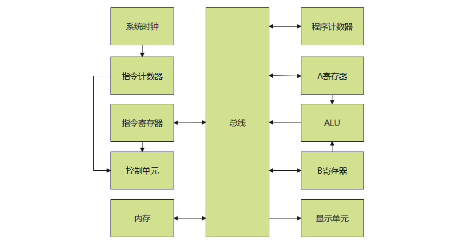
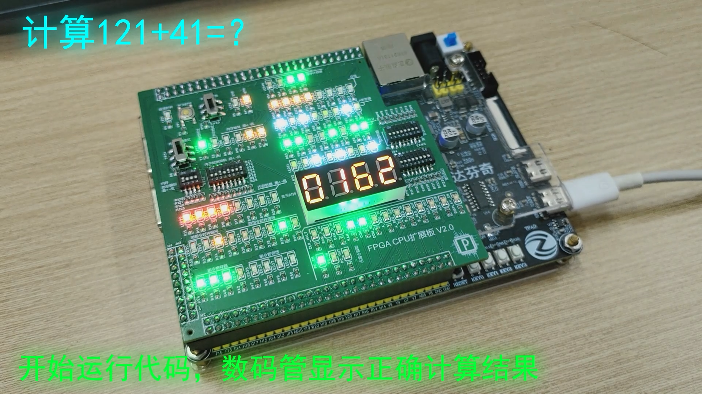
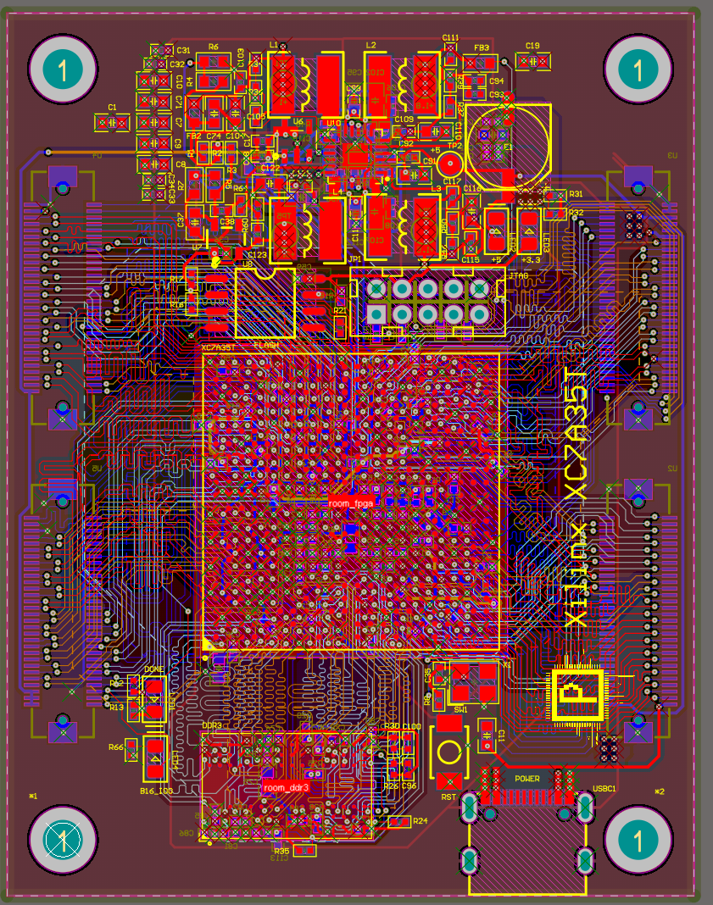
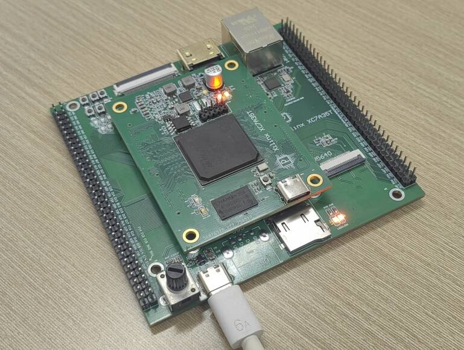
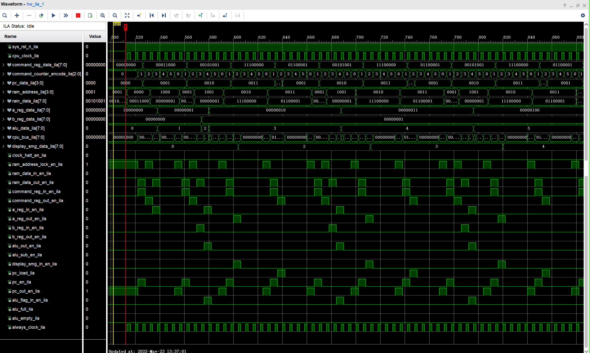

8位CPU内核
这是一个能运行用户程序代码的CPU内核，其主要组成结构如下图所示。主要架构参考BenEater
上电后，用户可以通过拨码开关，在内存的不同地址写入机器码程序。程序写入完成后，可以通过启动时钟使得CPU开始工作。CPU启动后，系统时钟开始工作，给指令计数器时钟节拍。指令计数器给时钟节拍计数，生成微指令步数信息。控制单元收到指令计数器的信息后，会根据内部的指令集，译码为微指令，控制程序计数器，从内存加载用户写入的程序，读取到程序后，控制单元会根据读取到的程序，控制AB寄存器，ALU，显示单元，等其他模块，运行用户编写的程序。
CPU使用汇编机器代码进行编程，目前支持的指令集如下图所示：
机器码 汇编码 含义
0000 NOP 空等待
0001 LDA 把指令低四位作为指定内存地址的内容放入A寄存器
0010 ADD 把指令低四位作为指定内存地址的内容与A寄存器的数值相加，结果覆写A寄存器
0011 SUB 把指令低四位作为指定内存地址的内容与A寄存器的数值相减，结果覆写A寄存器
0100 STA 把A寄存器的内容存入指令低四位作为指定内存地址
0101 LDI 把指令低四位的内容放入A寄存器
0110 JMP 把指令低四位的内容作为程序下一次跳转到的地址
0111 JZ ALU内容为0时跳转到指令低四位指向的内存地址，否则不工作
1000 JF ALU内容为满时跳转到指令低四位指向的内存地址，否则不工作
1110 OUT 把A寄存器的结果存到输出寄存器
1111 HLT 停机
目前CPU有两个版本，一个是FPGA版本的，一个是使用74逻辑门电路搭建的版本。
FPGA版本是我在大二暑假刚学习完FPGA时制作的，使用纯Verilog编写，除了用于调试的ila之外，没有使用其他的IP核。使用的芯片为 Xilinx XC7A35T。用户可以通过扩展板上的拨码开关来输入汇编机器代码，通过扩展板上的LED来查看当前代码的运行状态和运行结果。CPU的所有功能均已通过验证。
在2024年学习完嵌入式Linux和FPGA的基础教程后，我开始好奇板子的硬件电路结构和硬件设计，在好奇心的和网上各位开源大佬工程的熏陶下，我开始学习高速电路设计与layout。通过观看教程， 我学习了Altium Designer软件的使用技巧，BGA芯片的封装的扇孔布线技巧，使用工具进行阻抗匹配计算线宽的方法，蛇形等长和差分等长的绘制技巧，电源铺铜技巧，了解了电源拓扑，DDR拓扑结构等大致内容，之后，我参考正点原子的板卡，画出了自己的第一块FPGA核心板和配套底板。
板子的配置的启动方式为主SPI启动，即上电后会从QSPI FLASH加载配置文件。顶端区域是电源，中间是主FPGA芯片，底端区域是DDR3。板子结构为6层板，叠层结构为信号层-GND-信号层-信号层-电源层-信号层。板子主要信号线已经经过阻抗匹配工具计算出了适合的宽度，做了单端50欧姆，差分100欧姆的阻抗设计。DDR3，相同BANK引脚，JTAG，MGT接口都做了等长设计，核心板引出的四个BNAK中，有两个BANK做了差分处理。电源部分主要依靠电源层的平面分割铜箔来连接，提升负载能力，同时提高稳定性。
底板如上图所示，引出了RGB LCD,HDMI,千兆以太网接口，OV5640,SD卡，XDAC，串口，按钮，LED，多余未用接口通过排针引出。板载JTAG调试器，方便进行调试。
板子制作过程碰到了很多困难，上面有两块BGA封装的芯片，在电路设计完成，开始焊接后，我购买了植锡台，植锡钢网，植锡球，焊油等工具，学习bga芯片的植球焊接，学习了BGA返修台，加热台等大型焊接设备的使用方法。经过了十几次反复的失败之后，我终于慢慢体会到了BGA芯片植锡和焊接方法。
之后，我在自制的FPGA上成功运行了这个自制的CPU内核，通过VIO控制CPU，通过ILA显示结果。我给FPGA加载完CPU的Verilog硬件电路后，在内存模块里编写了单个变量自增的机器汇编代码,接着运行CPU，结果如下图所示。从上往下数第12个信号（display_smg_data_ila[7:0]）的内容随时间而增加，和预期结果一样。
74门电路板本是我在大一上学期的时候搭建的，在原有CPU框架基础上我增加了点阵图像电路、声音处理电路和调试控制电路，使CPU可以输出图像和声音，并且可以自由干预和控制每一步微指令的运行，增加了可玩性。
演示视频